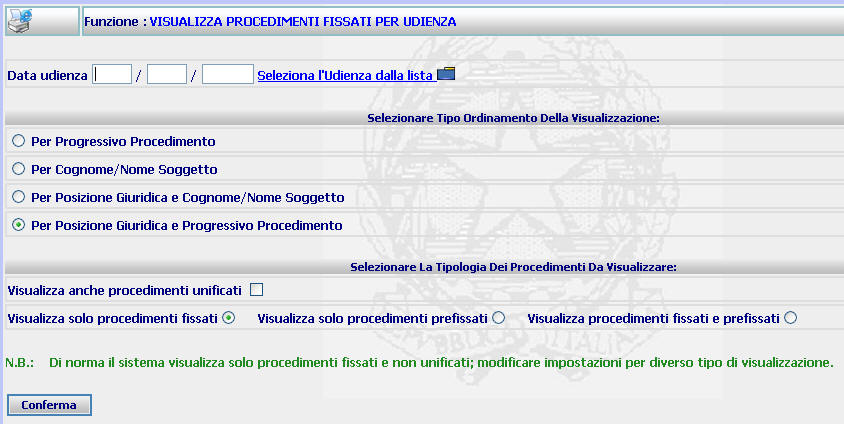
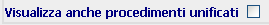

GENERALITA'
VISUALIZZA PROCEDIMENTI FISSATI PER UDIENZA - PER DATA (TUTTI I COLLEGI):
La funzione
consente di impostare la ricerca di tutti i procedimenti che risultino fissati ad una
certa data
(indipendentemente dal Collegio cui risultino assegnati) al fine di ottenere la visualizzazione
di un elenco unico che comprende tutti i procedimenti.
LE MASCHERE VIDEO
La
funzione
in esame viene realizzata attraverso la maschera seguente che è composta da
più sezioni:
-
data udienza: la sezione consente
di selezionare la data interessata;
-
tipo di ordinamento della
visualizzazione:
la sezione consente di impostare
l'ordine di presentazione dei procedimenti Sius;
-
tipologia dei procedimenti
da visualizzare:
la funzione consente di indicare la tipologia di procedimenti da visualizzare in
base al tipo di fissazione;

I
COME FARE PER ...
Per
visualizzare l'elenco
procedimenti fissati all'udienza ... l'utente deve:
-
compilare il campo relativo alla data interessata digitandolo o utilizzando
il link ;
-
selezionare una delle opzioni presenti nella seconda sezione della maschera;
-
nel caso in cui
si vogliano visualizzare anche i procedimenti unificati, selezionare il
check box 
-
selezionare uno dei seguenti radio button a seconda che si vogliano
visualizzare solo i procedimenti fissati, solo i prefissati o entrambe le
categorie
-
selezionare il bottone

CAMPI
I campi da
compilare sono i seguenti